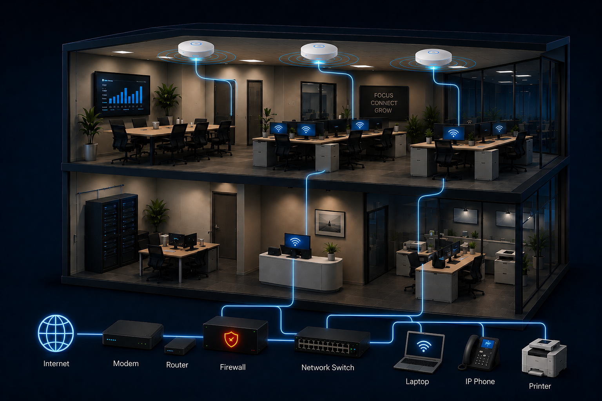
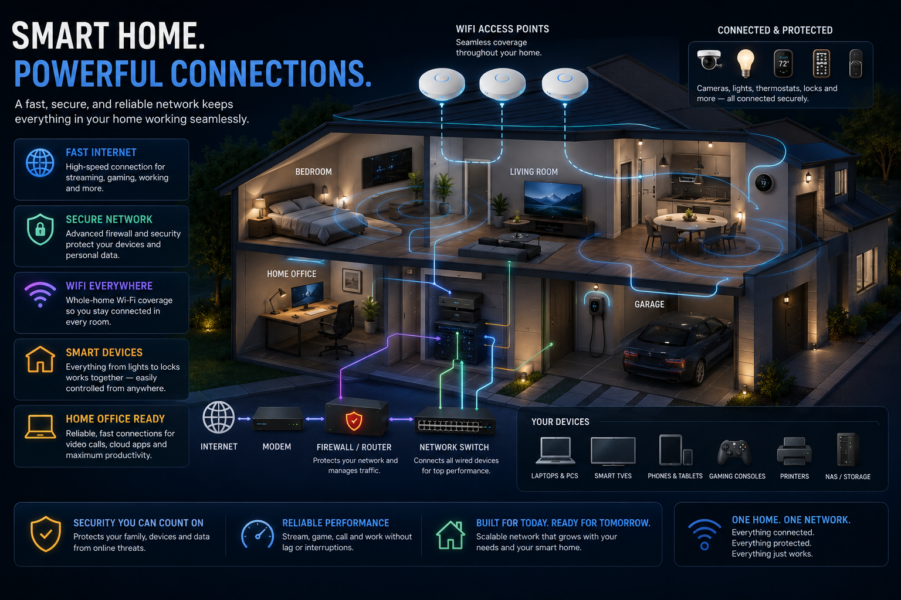
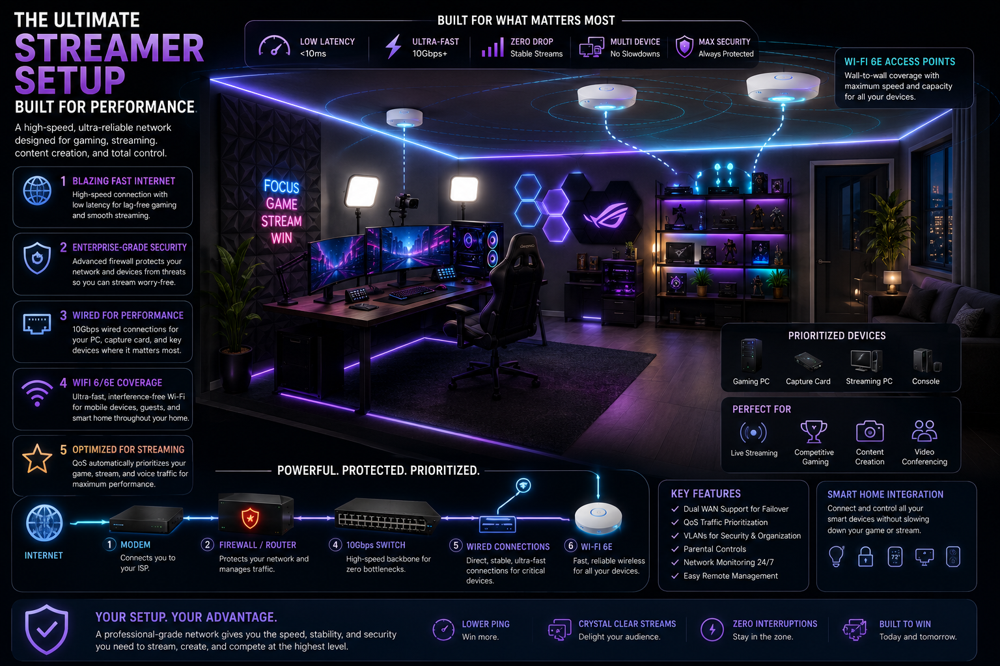

Small Business
Reliable, secure, and scalable networks that keep your team productive and your business running smoothly.
- Fast and reliable internet
- Secure guest and employee access
- Scalable infrastructure for growth

Services / Infrastructure
High-performance, secure, and reliable networks designed for how you live and work.
Designed around you
From small businesses to intelligent homes and high-performance offices, I design networks that are fast, secure, and built to handle what matters most.
Reliable, secure, and scalable networks that keep your team productive and your business running smoothly.

Smart, secure Wi-Fi throughout your home for streaming, gaming, smart devices, remote work, and more.

Low-latency, high-bandwidth networking for streaming, gaming, content creation, video conferencing, or anyone who wants an uncompromising home office.

Your setup. Built right.
Tell me about your space, devices, and goals. I’ll recommend a practical solution built around the way you work.